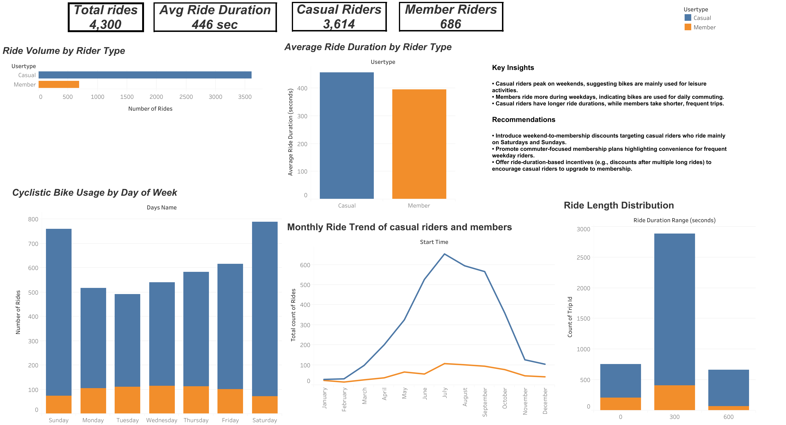

Tools used: Excel, BigQuery SQL, and Tableau.
This project analyzes Cyclistic bike-share data to understand how casual riders and annual members use the service differently. The objective is to uncover behavioral patterns and generate data-driven insights that can help the company convert casual riders into profitable annual memberships.
The analysis focuses on identifying differences in usage behavior, including:
Cyclistic wants to increase the number of annual memberships.
Annual members are more profitable than casual riders, so the marketing team wants to understand:
The dataset contains bike-share trip records including:
trip_idstart_timeend_timebikeidtripdurationfrom_station_idfrom_station_nameto_station_idto_station_nameusertype (Customer / Subscriber)genderbirthyearduration_secride_lengthday_of_weekavg_duration_secmax_duration_secmode_dayThe dataset was cleaned and processed using BigQuery.
| Tool | Purpose |
|---|---|
| Excel | Initial exploration |
| BigQuery | Data cleaning & SQL analysis |
| Tableau | Data visualization |
| GitHub | Project portfolio |
This diagram shows the flow of data from source to analysis and visualization.
To prepare the dataset for analysis, a cleaned view was created.
This step:
CREATE OR REPLACE VIEW `primal-chariot-479401-i4.divvy_trip_2019_q4.v_trips_2019_clean` AS
SELECT
*,
-- ride length (same as Excel calculation)
TIMESTAMP_DIFF(end_time, start_time, MINUTE) AS ride_length,
-- day of week
FORMAT_DATE('%A', DATE(start_time)) AS day_of_week
FROM `primal-chariot-479401-i4.divvy_trip_2019_q4.trips_2019_all`
WHERE end_time > start_time;This query calculates the average ride duration for members and casual riders for each day of the week.
CREATE OR REPLACE TABLE `primal-chariot-479401-i4.divvy_trip_2019_q4.trend_avg_ride_by_usertype_day` AS
SELECT
day_of_week,
CASE
WHEN usertype = 'Subscriber' THEN 'member'
WHEN usertype = 'Customer' THEN 'casual'
ELSE 'unknown'
END AS member_type,
AVG(duration_sec) AS avg_duration_sec
FROM `primal-chariot-479401-i4.divvy_trip_2019_q4.trips_2019_clean`
GROUP BY day_of_week, member_type
ORDER BY day_of_week, member_type;CREATE OR REPLACE TABLE `primal-chariot-479401-i4.divvy_trip_2019_q4.summary_day` AS
SELECT
day_of_week,
COUNT(*) AS total_rides,
AVG(duration_sec) AS avg_ride_sec
FROM `primal-chariot-479401-i4.divvy_trip_2019_q4.trips_2019_clean`
GROUP BY day_of_week;CREATE OR REPLACE TABLE `primal-chariot-479401-i4.divvy_trip_2019_q4.summary_member_day` AS
SELECT
usertype AS member_type,
day_of_week,
COUNT(*) AS total_rides,
AVG(duration_sec) AS avg_ride_sec
FROM `primal-chariot-479401-i4.divvy_trip_2019_q4.trips_2019_clean`
GROUP BY member_type, day_of_week;CREATE OR REPLACE TABLE `primal-chariot-479401-i4.divvy_trip_2019_q4.trend_member_vs_casual_users` AS
SELECT
CASE
WHEN usertype = 'Subscriber' THEN 'member'
WHEN usertype = 'Customer' THEN 'casual'
ELSE 'unknown'
END AS member_type,
COUNT(*) AS total_rides
FROM `primal-chariot-479401-i4.divvy_trip_2019_q4.trips_2019_clean`
GROUP BY member_type
ORDER BY total_rides DESC;CREATE OR REPLACE TABLE `primal-chariot-479401-i4.divvy_trip_2019_q4.trend_weekday_ride_by_member_casual` AS
SELECT
day_of_week,
CASE
WHEN usertype = 'Subscriber' THEN 'member'
WHEN usertype = 'Customer' THEN 'casual'
ELSE 'unknown'
END AS member_type,
COUNT(*) AS total_rides
FROM `primal-chariot-479401-i4.divvy_trip_2019_q4.trips_2019_clean`
GROUP BY day_of_week, member_type
ORDER BY day_of_week, member_type;CREATE OR REPLACE TABLE `primal-chariot-479401-i4.divvy_trip_2019_q4.trips_2019_summary` AS
SELECT
AVG(duration_sec) AS avg_duration_sec,
MAX(duration_sec) AS max_duration_sec,
(
SELECT day_of_week
FROM `primal-chariot-479401-i4.divvy_trip_2019_q4.trips_2019_clean`
GROUP BY day_of_week
ORDER BY COUNT(*) DESC
LIMIT 1
) AS mode_day
FROM `primal-chariot-479401-i4.divvy_trip_2019_q4.trips_2019_clean`;This query generates overall statistics for the dataset.
CREATE OR REPLACE TABLE `primal-chariot-479401-i4.divvy_trip_2019_q4.summary_overall` AS
SELECT
COUNT(*) AS total_rides,
AVG(duration_sec) AS avg_ride_sec,
MIN(duration_sec) AS min_ride_sec,
MAX(duration_sec) AS max_ride_sec
FROM `primal-chariot-479401-i4.divvy_trip_2019_q4.trips_2019_clean`;Based on the SQL analysis, several patterns were identified between casual riders and members.
Casual riders tend to ride more frequently on weekends, suggesting leisure-based usage.
Members ride more consistently during weekdays, which suggests commuting or routine travel.
Casual riders generally have longer ride durations compared to members.
This indicates that casual riders are more likely using bikes for recreational purposes.
Weekday ride counts are dominated by members, while weekend usage is more balanced between both groups.
This highlights an opportunity to target casual riders during peak leisure periods.
The final analysis was visualized using Tableau dashboards to compare riding behavior between casual riders and members.
The dashboard highlights:
From the visualization:

Explore the full interactive Tableau dashboard below: